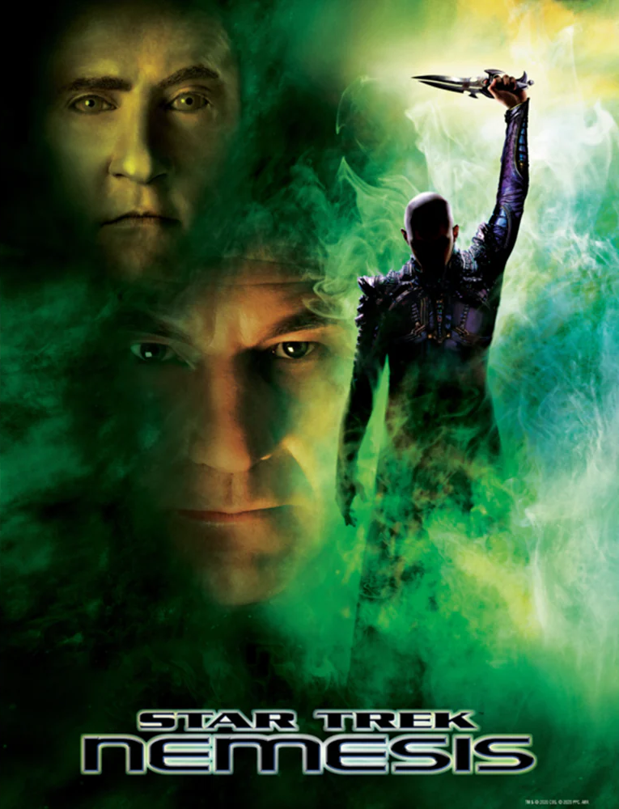
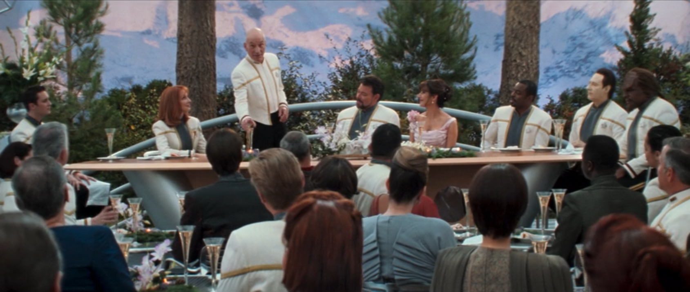

@c6reviews.
@c6reviews.Films
home
| Star Trek: Nemesis | |
|---|---|
|  | |
| Film number: | #10 |
| Premiere date: | December 13, 2002 |
| In-universe year: | 2379 |
| Universe TimelineGo to full timeline ➡ | |||
|---|---|---|---|
| 2363 | |||
| 2364 | Star Trek The Next Generation (TNG) |
||
| 2365 | |||
| 2366 | |||
| 2367 | |||
| 2368 | |||
| 2369 | Star Trek Deep Space Nine (DS9) |
||
| 2370 | |||
| 2371 | Star Trek Voyager (VOY) |
Generations | |
| 2372 | |||
| 2373 | First Contact | ||
| 2374 | |||
| 2375 | Insurrection | ||
| 2376 | |||
| 2377 | |||
| 2378 | |||
| 2379 | Nemesis | ||
| 2380 | Star Trek Lower Decks (LOW) |
||
| 2381 | |||
| 2382 | |||
| 2383 | Star Trek Prodigy (PRO) |
||
| 2384 | |||
| 2385 | |||
| 2386 | |||
 Star Trek: Nemesis
🗣
Star Trek: Nemesis
🗣
Star Trek: Nemesis is the tenth Star Trek film, and the fourth and final film to feature the cast of The Next Generation. It takes place in 2379, four years after the previous movie, Star Trek: Insurrection. It tells the story of a Romulan coup d'état orchestrated by Shinzon, a young clone of Jean-Luc Picard, and the Enterprise's desperate fight against Shinzon's weapon of mass destruction.
The movie premiered on December 13, 2002, and was mostly a box office flop. There had been plans for one more movie featuring the cast of The Next Generation that would have been a more proper send-off, but due to the failure of Nemesis in addition to the poor reception of Star Trek: Enterprise, the fifth film was scrapped and the franchise went dormant after Enterprise wrapped, with nothing in television or film until the soft reboot movie Star Trek [2009]. Because of this, Nemesis sort of leaves fans dangling off a cliff with a very unsatisfying final adventure for our heroes. Fortunately, over 20 years later, the gang would get their well-deserved send-off in Season 3 of Star Trek: Picard.
When I first saw this film in 2002, I thought it was actually pretty good. I wasn't a huge fan of Tom Hardy as a young Picard, but other than that, I was happy to see the gang again in a film that had more action than its predecessor. Looking back on it now, I do see the film as a bit of a disappointment. Even though it wasn't intended to be the final film for the TNG cast, it ended up being the final film, making it even more disappointing.
In an important exercise in “Don't believe everything you see on the internet,” there is a trivia element on IMDb for this film that says in part, “[Director Stuart] Baird expresses his frustration in the Blu-ray commentary at having to tell a story in an established universe with pre-existing design and character relationships, hated having to utilize recycled sets and props, and had trouble remembering the names of the main cast.” This interpretation of the commentary seems to be heavily colored by the author of this comment. Having watched the entire Blu-ray commentary myself, it seems to me that Baird speaks very matter-of-factly and unemotionally about how shooting differs between the smaller Enterprise sets versus the larger Scimitar sets, as well as his desire to make some changes and updates to existing props. I don't detect any frustration and certainly no “hatred” about these things in Baird's commentary.
I'm no Baird apologist, but I think the assessment found in IMDb is unfair. It is true that Baird was new to Star Trek and that he may not have been interested in delving into its history prior to directing the film, but I haven't found any evidence that he felt hatred toward the franchise. Now, it is also true that Baird did not accept any help from veteran Trek actor and director Jonathan Frakes (Will Riker), and I have found accounts of other actors criticizing Baird, perhaps the harshest of which came from Marina Sirtis (Deanna Troi) who bluntly said, “The director was an idiot.”
Baird did work to make the film as accessible to non-Trek fans as possible, but he did this by cutting many of the references to previous art that the fans would have greatly appreciated, and in so doing, he created a more generic action flick that lacked some of the uniqueness of Trek. I also have a hard time really believing in Shinzon as a villain. First of all, he just... somehow built the most powerful ship the quadrant has ever seen at a secret base despite working in the mines, having no resources, and having just barely entered adulthood. And he has somehow harnessed and weaponized a type of radiation that had only been theoretical up to this point. Seems a bit unlikely, no? Also, the idea that Picard would have turned into a monster if he had had Shinzon's upbringing, just because they share the same DNA... I'm not buying it. Sure, it raises the larger question of nature versus nurture, but I don't feel like the movie really explores it enough. Besides, all I see is Tom Hardy, I can't really believe it's a clone of Picard. Now, if the villain had been played by Patrick Stewart – truly a mirror version – now THAT would have been something!
The movie also sort of squanders an opportunity to learn more about the Romulans, definitely one of the more secretive races in the Trek universe. Instead, we take time away from the main story just so that Shinzon can telepathically rape Deanna Troi... and Picard basically just says, “I need you to keep working so just deal with it.” If this whole part had been left out of the movie, literally nothing would have been lost. Overall, the film just doesn't live up to the Star Trek name.

- As mentioned above, there are only a few references in this film because the director actively worked to remove them.
- While the Romulans have been a part of Star Trek since The Original Series, this is the very first time that the Remans are mentioned in the entire franchise.
- Non-reference: Shinzon and Picard both suffered from Shalaft's Syndrome when they were young boys. This was never mentioned before, and will never be mentioned again.
- In this film, we see the front viewscreen of the bridge being blown out, exposing the bridge to space. We also see our hero ship ramming an enemy ship. Both of these things happened previously with the USS Voyager in VOY 4x09: Year of Hell, Part II.
- Commander Riker comments that he first saw Data on the holodeck trying to whistle a tune, but he can't remember which tune. This refers to the first episode of The Next Generation, TNG 1x01/02: Encounter at Farpoint, and the tune was “Pop Goes the Weasel.”
👎 Director Stuart Baird — If accounts of the main cast are true, Stuart Baird didn't know much about the Star Trek universe and didn't accept any help from the veteran actors. Actor LeVar Burton said that Baird frequently called him “Laverne.” Although Baird put forth a sincere effort, it is clear that his involvement had a negative impact on morale and the film as a whole.
👍 Will & Deanna's wedding reception — It's about time that these two finally got together. For me, I'm just going to ignore that whole Troi and Worf fling. Oh, also, Data singing “Blue Skies” was delightful.
🤷♂️ The Argo — Did we need a dune buggy scene? Do we need dune buggies in the 24th century?
👎 Janeway cameo — I'm sure there are others who will disagree with me on this one, but I did not care for Janeway's cameo appearance. I just think that she either should have had a larger role or should have just been left out entirely. The way she holds up her hand to interrupt Picard also doesn't sit well with me.
👎 Troi is mind-raped again — I really, really wish they'd stop doing this to Troi. Come up with something original, for the love of God.
👎 Everyone forgets about the Bassen Rift — No one, including Data, seems to think about the danger of flying through the rift – where they won't be able to communicate with Starfleet – until they're already in the rift.
- Poor Wesley Crusher. You can see him at the wedding reception, but he doesn't have any lines. The last we saw him was in TNG 7x20: Journey's End, when he went off with The Traveler to experience other planes of existence. Now, sure, it's possible he stopped by this plane of existence to attend the wedding, but it doesn't explain why he's wearing a Starfleet uniform and seems to have gotten a promotion, since he sports the rank insignia of a Lieutenant Junior Grade. He did have a few lines, originally, but they were cut from the final release.
- No explanation is given for Worf's presence on the Enterprise. He was last seen being appointed as the Federation ambassador to Qo'nos in the series finale of Deep Space Nine. I suppose they just gave up on trying, considering that in the previous movie, Worf tries to explain his presence, but his dialogue is purposely drowned out by another conversation.
- The Enterprise can detect positronic signatures at a significant distance? That probably would have come in handy a few times when they needed to locate Data or Lore...
- It's never explicitly stated, but when Data copies his memories to B-4, I'm just going to assume that he copied everything except for any classified Starfleet things that shouldn't be shared. Maybe he also omitted his encounter with Tasha Yar.
- I have trouble believing that Picard looked anything like Shinzon (Tom Hardy) in his youth. The two are just too different. Someone decided to just make Shinzon bald because obviously that is Picard's only defining characteristic (that was sarcasm), but that contradicts already-established canon that has shown Picard with hair in his youth. They could have fixed this by having Picard's academy photo be of Tom Hardy with hair, and then explained Shinzon's early baldness because of his traumatic upbringing in the mines, but sadly, no one thought of that.
- In the middle of a big space battle, the Remans board the Enterprise on a lower deck. Is sending the first officer and primary tactical officer below to fight them off really the best use of resources? Worf should be at his post, coordinating the ship's fight with the Scimitar.
- “I am in a room, with lights!” — B-4, summing up the film's creative direction.
| My rating: | 3 | FINAL SCORE 3.3 |
|
| SF Debris rating: | 1 | ||
| Ex Astris Scientia rating: | 4 | ||
| Rotten Tomatoes “Tomatometer”: | 3.8 | ||
| Normalized IMDb rating: (normalized across the first 10 films only) |
4.9 | ||
| More like Star Trek: Emesis, am I right? |